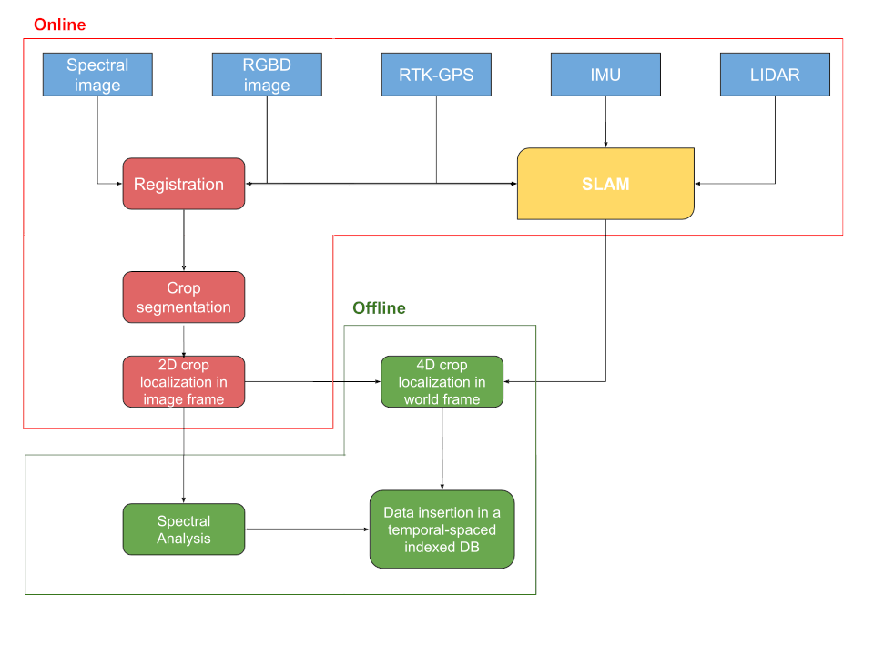

Projects
Agri-KITTI: a 4D Dataset for Phenotyping and Simultaneous Localization and Mapping in Agricultural Applications
Contribution:
- Robust and reproducible navigation plan for data recording
- Efficient data recording and saving pipeline
- 4D dataset for SLAM application in agricultural domain

Navigate-and-Seek: a Robotics Framework for People Localization in Agricultural Environments
Contribution:
- Topological Particle Filter
- Adoption of NBS for reducing the uncertainty on humans’s location
- Evaluation on a digital twin of the real world scenario
Radiation mapping and source localization using a mobile robot and a topological map
Contribution:
- Gaussian Process interpolates sensor reading to obtain probabilistic map
- Graph-based navigation
- Adoption of NBS for modifying robot behaviour (attraction/repulsion)
Tracking of moving objects based on RFID technology
Contribution:
- Multi-Criteria Optimization problem
- Probabilistic sensor model
- Balanced performance: fast map coverage, reduced travel distance, high tag localization precision
Autonomous UAV Landing with Deep Reinforcement Learning
Contribution:
- Autonomous control based only on raw pixels (low-resolution gray scale images)
- Sim-to-real
- Human-level performance
A Next-Best-Smell Approach for Gas Detection with a Mobile Robot
Contribution:
- Multi-Criteria decision making
- Online planner
- Scalable to multiple criteria